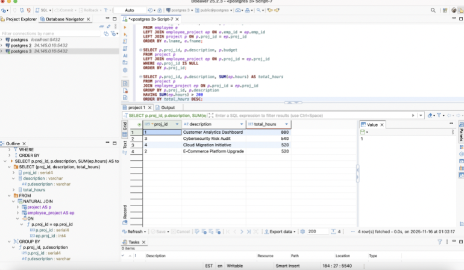
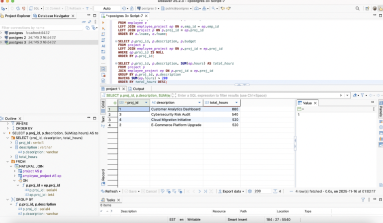

Context & goal
DataWorks Inc. is a fictional data consulting firm that manages staff, departments, and client projects. My role in this project was to design and implement a relational database so the company could answer real questions such as:
- Which employees work on which projects, and for how many hours?
- Which projects have the largest budgets and workloads?
- Who is leading each initiative across departments?
The business requirements included a true many-to-many relationship between employees and projects, support for leadership roles, and the ability to audit budget and hours over time.
Schema & key relationships
I started from a short narrative describing how DataWorks Inc. organizes departments, employees, and client projects. From there I designed a normalized schema that can scale as the firm grows.
- EMPLOYEE – basic staff information (name, role, department).
- DEPARTMENT – analytics, security, technology, HR, etc., each with a location.
- PROJECT – client projects with descriptions and budgets.
- EMPLOYEE_PROJECT – bridge table capturing the many-to-many relationship between employees and projects, including hours, start_date, and a leader flag.
Primary and foreign keys enforce referential integrity, and the bridge table makes it easy to calculate totals by employee, project, or department without duplicating data.
Queries & analytics
Once the schema and sample data were in place, I focused on queries that mirror what a manager or consultant would actually want to see.
- Employee workload by project – joins EMPLOYEE, PROJECT, and EMPLOYEE_PROJECT to show which people are assigned where, their hours, and whether they are project leaders.
- Project budgets with assigned teams – lists each project, its budget, and the employees assigned to it, ordered by budget so leadership can see high-value work first.
- Total hours per project – aggregates the bridge table to summarize hours by project and rank initiatives by total effort.
- Department-level view – shows which departments contribute to which projects, combining both budget and effort.
These queries are written with clear aliases and comments so that someone else at DataWorks Inc. could reuse and adapt them for ad-hoc reporting or dashboards.
Screenshots from Implementation
 

SQL query results from PostgreSQL (via DBeaver) showing employee participation in projects, departmental assignments, project budgets, and total hours aggregated by project.
Impact & what I learned
DataWorks Inc. was a compact project, but it captured the full lifecycle of a real database engagement: reading a business scenario, modeling entities and relationships, writing SQL scripts, loading data, and then answering concrete questions with queries.
- Practiced turning a many-to-many narrative into a clean, normalized schema with a bridge table and clear constraints.
- Strengthened my ability to write multi-table joins that remain readable and reusable for others.
- Saw how even a small dataset can already support useful analytics such as workload distribution and project prioritization.
This mini-project connects directly to my larger work on Sunrise General Hospital — both show how careful data modeling and SQL can turn messy narratives into reliable, analytics-ready structures.